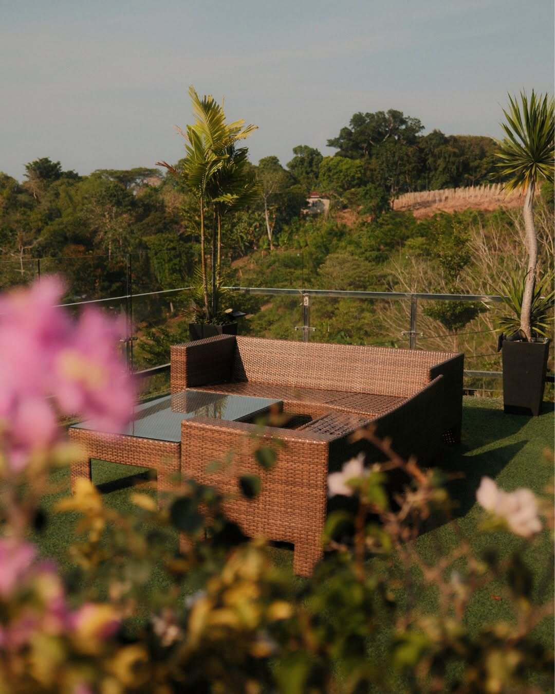
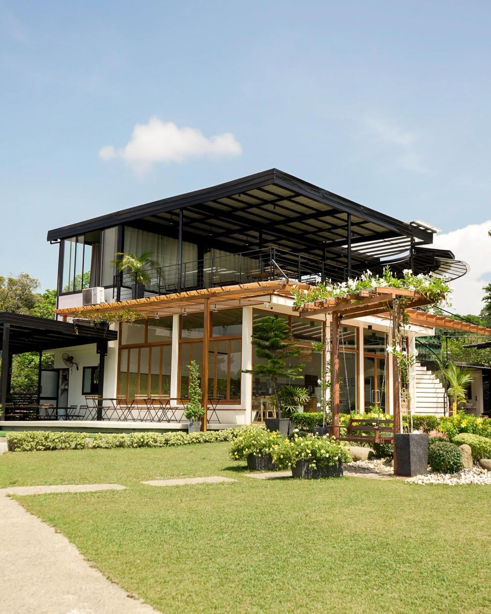
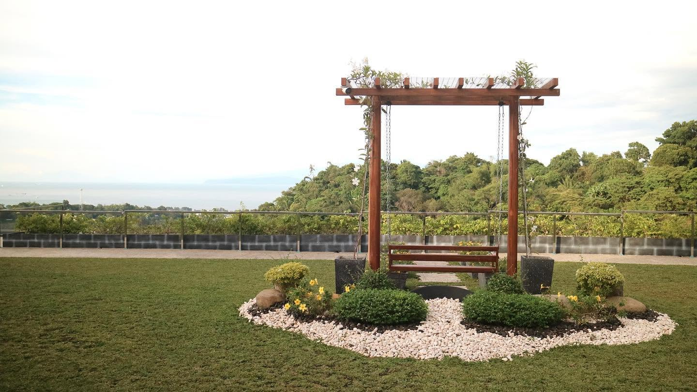
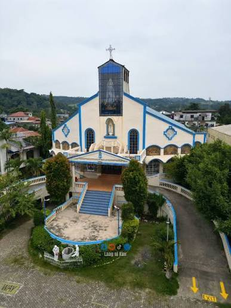
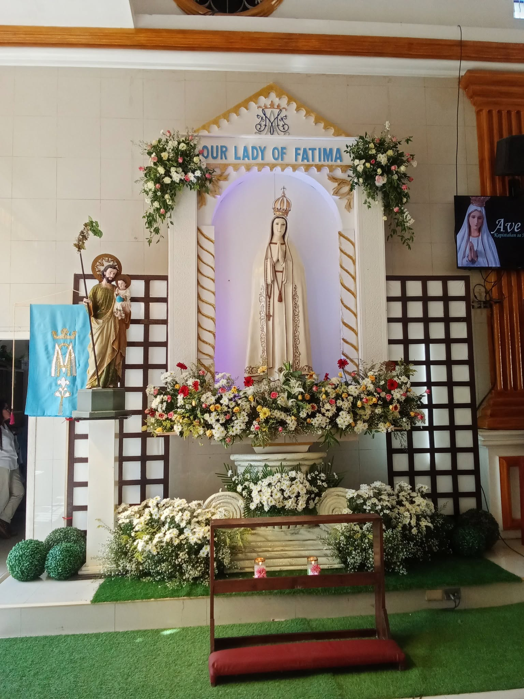
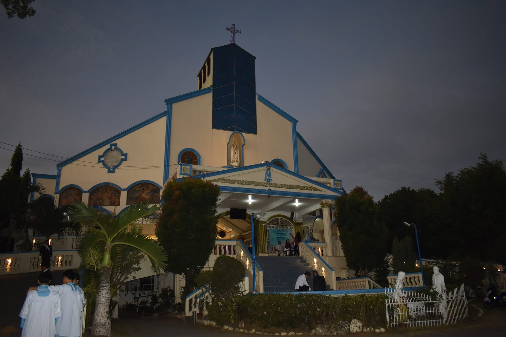
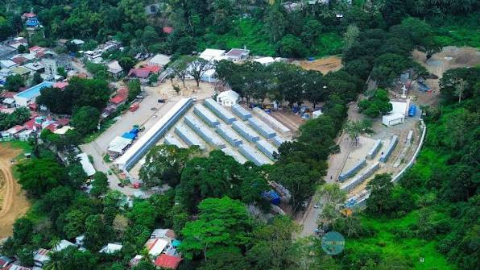
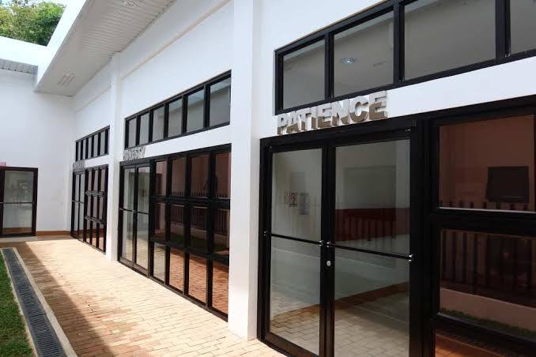
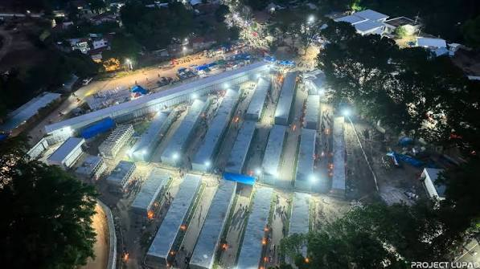

Discover the beautiful spots and landmarks in Barangay Camaman-an.
August Cafe & Restaurant is a popular dining spot tucked away in the hilly terrains of Sitio Sta. Cruz, Upper Camaman-an, Cagayan de Oro City. Known for its cozy, aesthetic interior and breezy garden atmosphere, it has become a favorite getaway for people looking to escape the crowded downtown center..



Urbanized area of Barangay Camaman-an, Cagayan de Oro City. Known for its rich local history and welcoming community atmosphere, it has become a sacred sanctuary for residents and visitors looking to find peace, reflection, and spiritual connection away from their busy daily routines.



Sitio Bolonsiri, Upper Camaman-an, Cagayan de Oro City. Known for its historical significance as a site of collective memory and its massive environmental revitalization, it has become a unique open-air landmark for residents looking to find a peaceful, organized sanctuary for reflection away from the busy downtown core.


